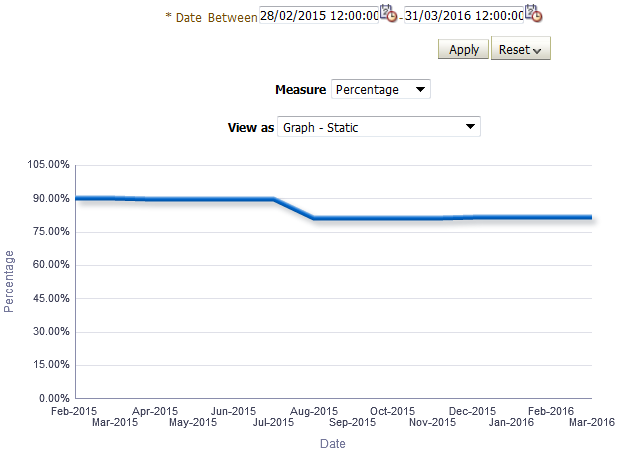
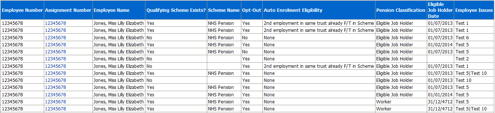
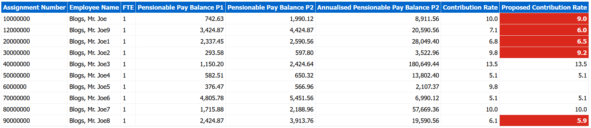
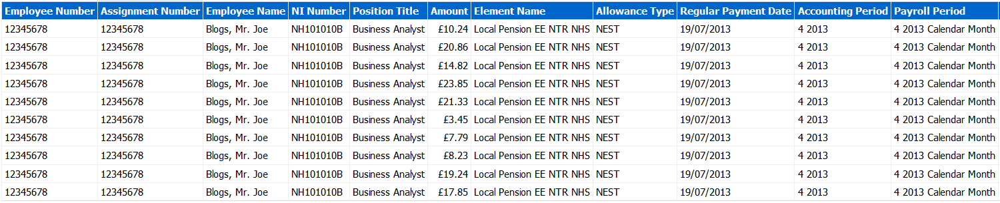

Pensions Dashboard
Description
This dashboard is designed to provide the user with intelligence around employees pension information.
Allocation
This dashboard is available to the following URPs:
XXX BI Administration
XXX HR Administration
XXX HR Administration (With RA)
XXX HR Management
XXX Payroll Administration
XXX Payroll Audit
XXX Payroll Super Administration
XXX Pensions Administration
Summary Tab
Assignments Opted IN to the NHS Pension
Description
This analysis is designed to show summary counts of assignments that have either opted IN or OUT of the NHS Pension Scheme and the percentage difference, grouped by month.
Prompts:
Organisation(s)
Date Between
View Selectors:
Table
Graph – Static (Default)
Graph – Zoomed to Data Range
Action Links:
None
Data Items
| Date | Percentage |
|---|---|
| Opt In | Opt Out |
| Assignments |
Example Screenshot

Pension Entries Exceptions
Description
This analysis is designed to show Element Entry information related to Pensions where an assignment may fulfill the criteria of one or more of the exception tests listed below.
View Selectors:
None
Action Links:
By clicking on an Assignment Number, users can drill down into an individual’s Element Entries information.
Data Items
| Employee Number | Qualifying Scheme Exists |
|---|---|
| Assignment Number | Scheme Name |
| Employee Name | Opt-Out |
| Auto Enrolment Eligibility | Pension Classification |
| Eligible Job Holder Date | Employee Issues |
Example Screenshot


Checklist Criteria
| Test | Data Item(s) | Test Detail |
|---|---|---|
| Test 1 | "Element Type"."Element Name"; "Element Entry"."Entry Value"; "Input Value"."Input Value Name" | Employees fulfil Test 1 criteria if: (Element Name = ‘Auto Enrolment Eligibility NHS’ AND Entry Value <> ‘None’) AND (Element Name = ‘Pension NHS’ AND Input Value Name = ‘Opt Out’ AND Entry Value = ‘No’) |
| Test 2 | "Element Type"."Element Name"; "Element Entry"."Entry Value"; "Input Value"."Input Value Name"; "Element Entry"."Date Value" | Employees fulfil Test 2 criteria if: (Element Name = ‘Pensions Information’ AND Input Value Name = ‘Pension Classification’ AND Entry Value = ‘Eligible Job Holder’) AND (Element Name = ‘Pensions Information’ AND Input Value Name = ‘Eligible Job Holder Date’ AND Element Entry Date Value > Current_Date) |
| Test 3 | "Element Type"."Element Name"; "Element Entry"."Entry Value"; "Input Value"."Input Value Name" | Employees fulfil Test 3 criteria if: (Element Name = ‘Pensions Information AND Input Value Name = ‘Postponement Type’ AND Entry Value = ‘DB Scheme Postponement’) AND (Element Name = ‘Pensions Information’ AND Input Value Name = ‘Pension Classification’ AND Entry Value = ‘Eligible Job Holder’) |
| Test 4 | "Element Type"."Element Name"; "Element Entry"."Entry Value"; "Input Value"."Input Value Name" | Employees fulfil Test 4 criteria if: (Element Name = ‘Pensions Information’ AND Input Value Name = ‘Qualifying Scheme Exists’ Where Entry Value = ‘Yes’) AND ((Element Name = ‘Pensions Information’ AND Input Value Name = ‘Qualifying Scheme Name’ AND Entry Value = ‘0’) OR Input Value Name <> ‘Qualifying Scheme Name’)) |
| Test 5 | "Element Type"."Element Name"; "Element Entry"."Entry Value"; "Input Value"."Input Value Name" | Employees fulfil Test 5 criteria if: (Element Name = ‘Pensions Information’ AND Input Value Name = ‘Opt Out Date’ AND Entry Value IS NOT NULL) AND (Input Value Name = ‘Qualifying Scheme Exists’ And Entry Value = ‘Yes’) |
| Test 6 | "Element Type"."Element Name"; "Element Entry"."Entry Value"; "Input Value"."Input Value Name" | Employees fulfil Test 6 criteria if: (Input Value Name = ‘Qualifying Scheme Name’ AND Entry Value IS NOT NULL ) AND (Element Name = ‘Pensions Information’ AND Input Value Name = ‘Qualifying scheme exists’ AND Entry Value <> ‘Yes’) |
| Test 7 | "Element Type"."Element Name"; "Element Entry"."Entry Value"; "Input Value"."Input Value Name"; "Element Entry"."Date Value" | Employees fulfil Test 7 criteria if: (Element Name = ‘Pensions Information’ AND Input Value Name = ‘Postponement Type’ AND Entry Value = ‘DB Scheme Postponement’) AND (Element Name = ‘Pensions Information’ AND Input Value Name = ‘Eligible Job Holder Date’ AND Element Entry Date Value = 31-DEC-4712) |
| Test 8 | "Element Type"."Element Name"; "Element Entry"."Entry Value"; "Input Value"."Input Value Name" | Employees fulfil Test 8 criteria if: (Element Name = ‘Pensions Information’ AND Input Value Name = ‘Postponement End Date’ AND Entry Value IS NOT NULL) AND (Element Name = ‘Pensions Information’ AND Input Value Name = ‘Postponement Type’ And Entry Value IS NULL) |
| Test 9 | "Element Type"."Element Name"; "Element Entry"."Entry Value"; "Input Value"."Input Value Name" | Employees fulfil Test 9 criteria if: (Element Name = ‘Pensions Information’ AND Input Value Name = ‘Postponement Type’ AND Entry Value IS NOT NULL) AND (Element Name = ‘Pensions Information’ AND Input Value Name = ‘Postponement End Date’ AND Entry Value IS NULL) |
| Test 10 | "Element Type"."Element Name"; "Element Entry"."Entry Value"; "Input Value"."Input Value Name" | Employees fulfil Test 10 criteria if: (Element Name = ‘Pensions Information’ AND Input Value Name = ‘Opt Out Date’ AND Entry Value IS NOT NULL) AND ((Element Name = ‘Pensions Information’ AND Input Value Name = ‘Opt in Date’ AND Entry Value IS NULL) AND (Element Name = ‘Pensions Information’ AND Input Value Name = ‘Auto Enrolment Date’ AND Entry Value IS NULL)) |
| Test 11 | "Element Type"."Element Name"; "Element Entry"."Entry Value" | Employees fulfil Test 11 criteria if: ("Element Type"."Element Name" = 'Auto Enrolment Eligibility NHS' AND "Element Entry"."Entry Value" = '2nd employment in same trust already F/T in Scheme') = 1 AND COUNT(DISTINCT "Assignment"."Assignment Number" BY "Employee Attributes"."Employee Number") < 2 |
| Test 12 | "Element Type"."Element Name"; "Element Entry"."Entry Value" | Employees fulfil Test 12 criteria if: ("Element Type"."Element Name" = 'Auto Enrolment Eligibility NHS' AND "Element Entry"."Entry Value" = '2nd employment in same trust already F/T in Scheme') = 1 AND SUM(MAX("Assignment"."FTE" BY "Assignment"."Assignment Number") BY "Employee Attributes"."Employee Number") < 1 |
| Test 13 | "Element Type"."Element Name"; "Element Entry"."Entry Value"; "Input Value"."Input Value Name" | Employees fulfil Test 13 criteria if: ("Element Type"."Element Name" = 'Auto Enrolment Eligibility NHS' AND "Input Value"."Input Value Name" = 'Eligibility' AND "Element Entry"."Entry Value" = 'Already employed elsewhere in full time capacity in NHS PS') = 1 AND SUM(MAX("Assignment"."FTE" BY "Assignment"."Assignment Number") BY "Employee Attributes"."Employee Number") >= 0.5 |
| Test 14 | "Element Type"."Element Name"; "Element Entry"."Entry Value"; "Input Value"."Input Value Name" | Employees fulfil Test 14 criteria if: ("Element Type"."Element Name" = 'Local Pension NHS' AND "Input Value"."Input Value Name" = 'Deduction Type' AND "Element Entry"."Entry Value" LIKE '%NEST%' BY "Assignment"."Assignment Number") = 1 AND MAX("Element Type"."Element Name" = 'Pension NHS' AND "Input Value"."Input Value Name" = 'Opt Out' AND "Element Entry"."Entry Value" = 'No' BY "Assignment"."Assignment Number") = 1 |
| Test 15 | "Element Type"."Element Name"; "Element Entry"."Entry Value"; "Input Value"."Input Value Name" | Employees fulfil Test 15 criteria if: ("Element Type"."Element Name" = 'Auto Enrolment Eligibility NHS' AND "Input Value"."Input Value Name" = 'Eligibility' AND "Element Entry"."Entry Value" IN ( '2nd employment in same trust already F/T in Scheme', 'On payroll for expenses re-imbursement only') BY "Employee Attributes"."Employee Number") > 1 |
Pension Data Extract Matching Tab
Description
This analysis returns assignment information for the use of pension data matching. It uses values from the pension interface table and will reflect the data as it was sent to the Pensions Agency.
Prompts
* Payroll(s)
Date Of Leaving Pension Scheme >=
Data Items
| NI Number | NI Class |
|---|---|
| Date of Birth | Bank Indicator |
| SD Number | Standard Sessions |
| Surname | Actual Sessions |
| Forename(s) | WTE |
| Sex | Standard Hours |
| Title | Actual Hours |
| Marital Status | WT or PT Indicator |
| Former Name | Locum Indicator |
| Pension Start Date | MHO Indicator |
| Employment Id | As and When Indicator |
| Assignment Number | Employment Type |
| Date of Leaving Pension | Occupation Code |
| Address Line1 | Job Code |
| Address Line2 | Place of Employment |
| Address Line3 | Job Title |
| Address Line4 | Reason for Leaving Pension |
| Address Line5 | NI Class |
Example Screenshot

Pension Banding Tab
Description
This analysis enables users to identify employees who may be on the wrong pension band, or are near the edge of a band. Please note that this analysis returns payroll balances from ESR in real time however the element entry used to obtain the current pension band is updated overnight only.
Prompts
Period Start Date
Period End Date
Data Items
| Assignment Number | Pension Rate |
|---|---|
| Employee Name | Mapped Rate |
| FTE | Pensionable Pay Balance |
| Annualised Pensionable Pay Balance |
Example Screenshot

Pension Banding Part Time Tab
Description
This analysis enables users to identify part-time employees who may be on the wrong pension band, or are near the edge of a band. Please note that this analysis returns payroll balances from ESR in real time however the element entry used to obtain the current pension band is updated overnight only.
Prompts
Period 1 - Payroll Period End Date
Period 2 - Payroll Period End Date
Data Items
| Assignment Number | Pensionable Pay Balance P2 |
|---|---|
| Employee Name | Annualised Pensionable Pay Balance P2 |
| FTE | Contribution Rate |
| Pensionable Pay Balance P1 | Proposed Contribution Rate |
Example Screenshot

Pension Banding Unsocial Hours Tab
Description
This analysis is designed to help organisations with weekly and monthly re-banding of staff with changes to unsocial hours payments. Please note that this comparison report works using a periodic balance value (rather than annualised) and can be run for weekly or monthly payrolls.
Prompts
*Period 1 - Payroll Period End Date
*Period 2 - Payroll Period End Date
Element Name
*Period Type
Data Items
| Assignment Number | Pensionable Pay Balance P2 |
|---|---|
| Employee Name | Period Type |
| FTE | Contribution Rate |
| Pensionable Pay Balance P1 | Proposed Contribution Rate |
Example Screenshot

Local Pension Elements Tab
Description
This analysis enables users to report on local pension elements by Payroll Name and Accounting Period.
Prompts
* Payroll Name
* Accounting Period(s)
Element(s)
Organisation
Employee Number
Assignment Category
Person Type
Employee Person Type
Primary Assignments Only
Staff Group
Cost Centre
Job Role
Allowance Type
Amount
Data Items
| Employee Number | Payroll Name |
|---|---|
| Assignment Number | Cost Centre |
| Employee Name | Cost Centre Description |
| NI Number | Subjective Code |
| Position Title | Subjective Code Description |
| Amount | Pay Scale |
| Element Name | Pay Scale Description |
| Allowance Type | Organisation Name |
| Regular Payment Date | Employee Category |
| Accounting Period | Assignment Category |
| Payroll Period |
Example Screenshot

IAT Pension Override Dates Tab
Description
The analysis returns assignments where IAT has been run and the Pension Override Date has been populated as part of the IAT.
Prompts
Organisation(s)
Staff Group(s)
Assignment Category
Person Type(s)
Employee Person Type(s)
Assignment Status
Occupation Code
Employee Category
Pay Scale
Paypoint
* Effective Date Select Date
Data Items
| Employee Number | Element Name |
|---|---|
| Assignment Number | IAT Source Organisation |
| Employee Name | IAT Update |
| Latest Start Date | IAT Update Date |
Example Screenshot

Pension Opt Out Buy Back Tab
Description
The analysis is designed to aid organisations in providing data to NHS Pensions where an employee wishes to ‘buy back’ a period of pension contributions where they may have been opted out previously.
Prompts
Payroll Period End Date >= and <=
Assignment Number
Data Items
| Assignment Number |
|---|
| Employee Name |
| SD Number |
| NI Number |
| Accounting Year | Standard Whole Time Weekly Hours (if part time) |
|---|---|
| Capacity Code | Total Hours Worked in Year |
| Employment Type | Pensionable Pay Balance |
| Latest Start Date | Disallowed Days |
| Actual Termination Date | Total Pay |
| MHO | Tax Code |
| Whole Time (Y & N) | Scheme |
| Weekly Hours (if part time) | Pension Rate |
Example Screenshot